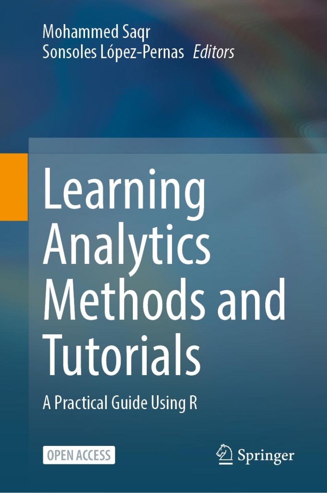

The lack of resources and methodological guidance on learning analytics has been a problem ever since the field started, and continues to be a problem today. Me and my colleague Mohammed Saqr thought that the arduous journey in learning analytics should not be endured by everyone and we decided to make that resource with the help of the learning analytics community as well as our collaborators.
In this book, we include all the basics of R as a programming language as well as the basics of data cleaning, statistics, and data manipulation. In doing so, we wanted the newcomers to find an easy entry to the field. We also tried to be as comprehensive as we could and included almost all major methodologies. For every method, we started with the basics, explaining the main concepts, the essential techniques, and basic functions. In subsequent chapters, we went deeper into advanced methods that are at the forefront of novel methodological innovations. We also used real-life learning analytics data and made it readily available to researchers. To do so, we collaborated with world-renowned researchers, package developers, and methodological experts from other fields to offer an unprecedented resource on novel topics that are hard to find any resource for.
We hope the readers find this book useful as a guide through learning analytics methods. We made all the tutorials available on the book website so they are easy to follow by interested readers. Thank you so much to the School of Computing of University of Eastern Finland for funding the book open access fees to be able to share with the whole research community.
Citation
@misc{lópez_pernas2024,
author = {López Pernas, Sonsoles},
title = {Book: {Learning} {Analytics} {Methods} and {Tutorials}},
date = {2024-07-15},
url = {https://sonsoleslp.github.io/posts/labook/},
langid = {en}
}